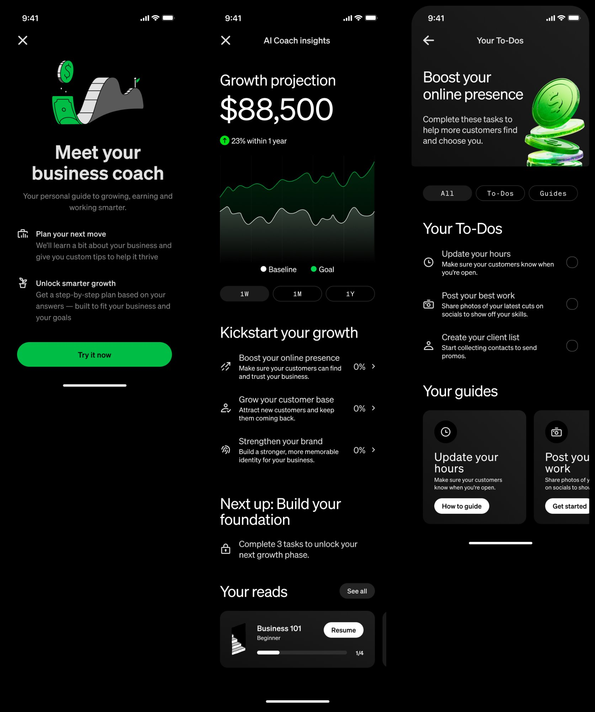
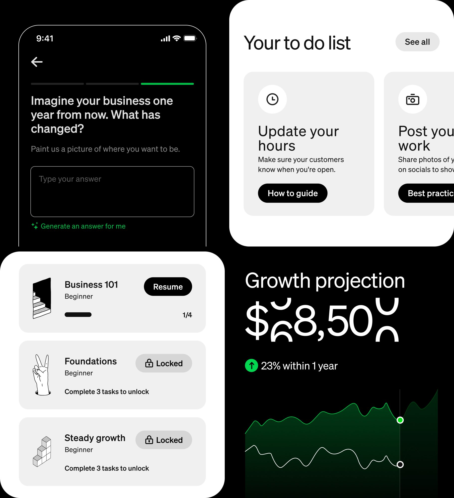
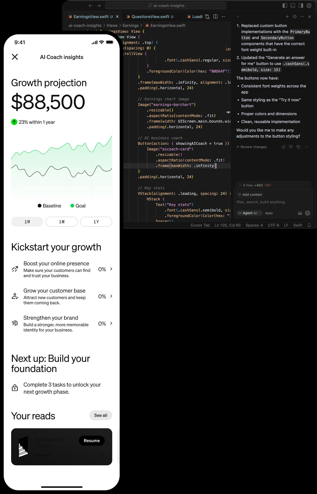

Afterpay · Hack Week · 2023
I designed and built a working AI coaching prototype in under 24 hours. The Commerce design team upvoted it and it was taken into Cash App as a formal exploration with the merchant team.
My role
Solo designer + prototype builder
Format
Hack Week. 24 hours
Result
Embedded in Cash App
Afterpay's merchant platform serves hundreds of thousands of small business owners but the product had always been transactional. It showed you your sales and your customers and never told merchants what to do next..
Most small business owners don't have a CFO or a marketing team or a growth strategist, so they run everything themselves. In my own customer research I kept hearing the same thing: "I know something's not working, I just don't know what to fix first." That became the brief for Hack Week.
An AI business coach inside the Afterpay merchant app. Instead of giving generic advice it reads the owner's own sales data and picks the one next action that would help most, with a concrete plan to act on it.
The experience had three layers. A growth projection showed what the business could achieve, a coaching dashboard split growth into three strategic pillars and a personalised task list gave merchants one clear thing to do each day. that showed what the business could achieve; a coaching dashboard that broke growth into three strategic pillars; and a personalised task list that gave merchants one clear thing to do each day.


One next action instead of a list of everything. Coaching products tend to overwhelm people with options, so the AI Coach picks a single priority, the thing that will move the needle most given where the business is right now.
Data the merchant already has. The insights came from real sales and customer data instead of generic advice, which made the recommendations feel personal and believable.
Progress as well as information. The task completion game and the locked growth phases were designed to build a habit and bring people back, using the Hook model in a business tool.
